@inponomarev
Ivan Ponomarev, Synthesized.io/MIPT
Manager ceo = ...;
Manager cto = ...;
Employee cleaner = ...;
List managers = new ArrayList();
managers.add(ceo);
managers.add(cto);
//bug!!
managers.add(cleaner);
//typecast with runtime exception -- too late!
Manager m = (Manager) managers.get(2);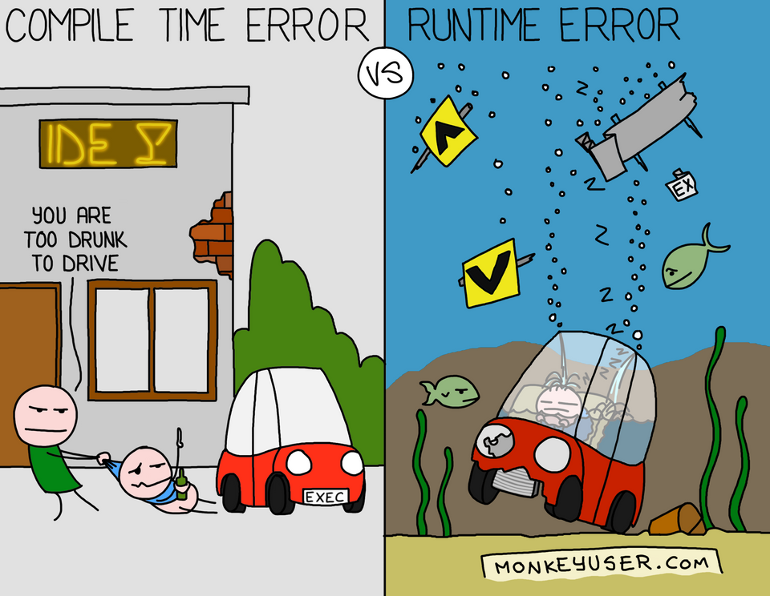
Manager ceo = ...;
Manager cto = ...;
Employee cleaner = ...;
List<Manager> managers = new ArrayList<>();
managers.add(ceo);
managers.add(cto);
// won't compile!
// managers.add(cleaner);
// no type casting is needed!
Manager m = managers.get(1);public class Pair<T> {
private T first;
private T second;
public Pair() { first = null; second = null; }
public Pair(T first, T second) {
this.first = first;
this.second = second;
}
public T getFirst() { return first; }
public T getSecond() { return second; }
public void setFirst(T newValue) { first = newValue; }
public void setSecond(T newValue) { second = newValue; }
}Pair<String> pair = new Pair<>("John", "Mary");
//Which is equivalent to replacing T with String
Pair(String, String)
String getFirst()
String getSecond()
void setFirst(String)
void setSecond(String)public <T> T getRandomItem(T... items) {
return items[ThreadLocalRandom.current().nextInt(items.length)];
}
String s = getRandomItem("A", "B", "C");
Manager m = getRandomItem(ceo, cto, cfo);public <T> T getRandomItem(List<T> items) {
T result =
items.get(
ThreadLocalRandom.current().nextInt(items.size()));
return result;
}Using parameterized classes is simple (just specify parameters, List<Manager>)
Using parameterized methods is even simpler: type inference: Manager m = getRandomItem(…);
Writing your own parameterized classes and methods is a more complex task.
public <T extends Person> String getRandomPersonName(List<T> items) {
Person result = //you can write T result = … as well
items.get(ThreadLocalRandom.current().nextInt(items.size()));
return result.getName();
}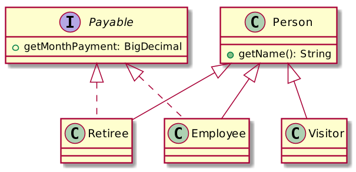
//you can add with ampersand as many interfaces as you like,
//but not more than one class
public <T extends Person & Payable>
String getRandomNameAndPayment(List<T> items) {
T result =
items.get(
ThreadLocalRandom.current().nextInt(items.size()));
return result.getName() //from Person!
+ result.getPayment(); //from Payable!
}Appeared in Java 5
There was a problem of backward compatibility
Generic classes is a language capability, not a platform capability
Type Erasure, damn it!
Generic Type (source) | Raw Type (compiled) |
| |
Generic Type (source) | Raw Type (compiled) |
| |
Source code | Compiled |
| |
Source code | Compiled |
| |
There are no parameterized classes in the JVM, only regular classes and methods.
Type parameters are replaced with Object or with boundary type.
Bridge methods are added to preserve polymorphism.
Type cast is added as needed.
The ability to use raw types as variable types is reserved for backward compatibility with code written before Java5.
Java5 was released in 2004.
List<Manager> a = new ArrayList <> ();
//Raw type usage.
List b = a;
//Compiled and executed, the list is corrupted!
b.add("manager");
//Executed: list.get returned String as Object
System.out.println(b.get(0));
//ClassCastException on execution
Manager m = a.get(0);Understanding generics in Java is not about what you can do with them, but about what you can’t do with them.
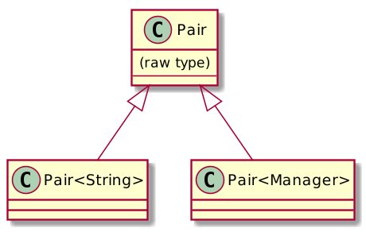
//compilation error! we don't know the type parameter in the runtime!
if (a instanceof Pair<String>) ...
//that's how it goes...
if (a instanceof Pair<?>) ...//alas, impossible!
List<int> integers = ... //compilation error!
List<Integer> integers = ...
integers.add(42); /*autoboxing under the hood:
integers.add(Integer.valueOf(42);*/
int v = integers.get(0); /*unboxing under the hood:
v = integers.get(0).intValue();*/Today: Need performance? — we write special implementations.
In the Standard Library:
Stream<Integer> → IntStream
Stream<Double> → DoubleStream.
In specialized libraries like fastutil:
ArrayList<Integer> → IntArrayList,
HashMap<Integer, V>→ Int2ObjectMap<V> (WARNING: the real need for such libraries is rare!!)
Tomorrow: Project Valhalla, specialized generics. Will solve the problem once and for all.
class Pair<T> {
T newValue {
return new T(); //alas, compilation error!
}
}class Container<T> {
// bounded wildcard type, to be explained later
Class <? extends T> clazz;
Container(Class<? extends T> clazz) {
this.clazz = clazz;
}
T newInstance() throws ReflectiveOperationException {
//if there is an accessible constructor without parameters!
return clazz.newInstance();
}
}
Container<Employee> container1 = new Container<>(Employee.class);public T[] toArray(){
//Won't compile
return new T[size];
}It is solved by passing a parameter, for example, to ArrayList:
/* If the array is of sufficient size - use it,
if it's too small - we construct a new one via reflection*/
public <T> T[] toArray(T[] a)//Won't compile: Generic Array Creation.
List<String>[] a = new ArrayList<String>[10];
//...because such an array will not have
//the full type information about its elements!List<String>[] a = (List<String>[])new List <?> [10];
Object[] objArray = a;
objArray[0] = List.of("foo");
a[1] = List.of(new Manager()); //won't compile!
objArray[1] = List.of(new Manager()); //will compile and run!
//Runtime error: Manager cannot be cast to String
String s = a[1].get(0);
//...and this is what is called heap pollution.The same heap pollution as in the previous example:
static void dangerous(List<String>... stringLists){
List<Integer> intList = List.of(42);
Object[] objects = stringLists;
objects[0] = intList;
ClassCastException
String s = stringLists[0].get(0);
}</Integer></String>
dangerous(new ArrayList<>());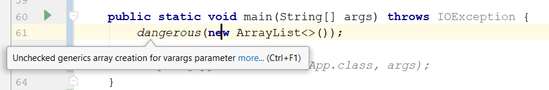
To calm the compiler down, you need to put the annotation @SafeVarargs:
/*I solemnly promise I will not
do heap pollution!*/
@SafeVarargs
static void dangerous(List<String>...…and the compiler will calm down.
That’s because having varargs with parameterized types is convenient!..
List.of(E… a)
Collections.addAll(Collection<? super T> c, T… elements)
EnumSet.of(E first, E… rest)
If you behave well, you can use @SafeVarargs, and everything will be fine:
Do not write anything to the elements of the array,
Do not pass a reference to the array of parameters to the outside methods.
Exceptions
catching exceptions is checking their types,
raw types is everything we can check in the runtime.
Anonymous classes
Instantiated in place, there cannot be multiple classes parameterized differently.
Enums.
public class Container<T> {
private static T value; //will not compile.
public static T getValue(); //will not compile
}
//Static context is one for all
Container<Foo>.getValue();
Container<Bar>.getValue();Source code | Compiled |
| |
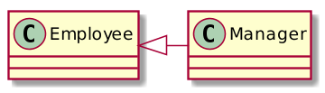
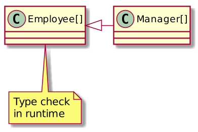 | 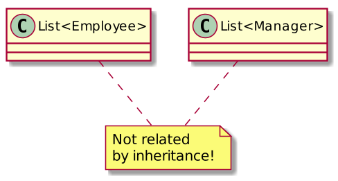 |
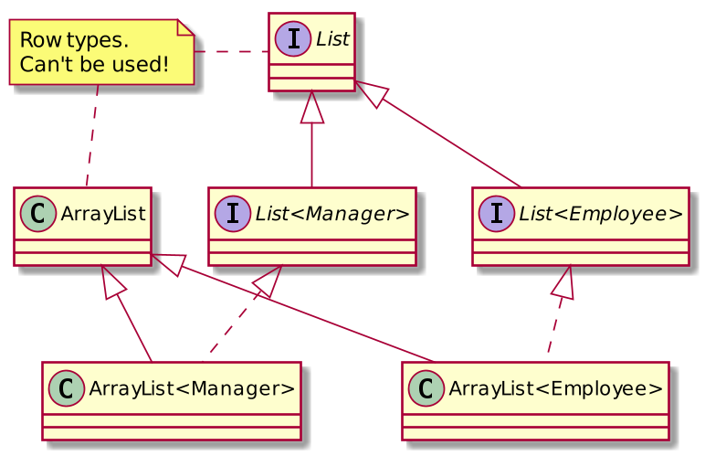
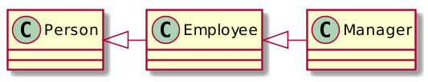
MyList<Manager> managers = ...
MyList<Employee> employees = ...
//Valid options, we want these to be compilable!
employees.addAllFrom(managers);
managers.addAllTo(employees);
//Invalid options, we don't want these to be compilable!
managers.addAllFrom(employees);
employees.addAllTo(managers);//only identically typed lists can be copied
class MyList<E> implements Iterable<E> {
void add(E item) { ... }
void addAllFrom(MyList<E> list) {
for (E item : list) this.add(item);
}
void addAllTo(MyList<E> list) {
for (E item : this) list.add(item);
}
...}
MyList<Manager> managers = ...; MyList<Employee> employees = ...;
employees.addAllFrom(managers); managers.addAllTo(employees);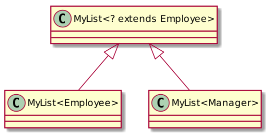
class MyList<E> implements Iterable<E> {
//MyList<Manager> will do as a MyList<Employee>!!
void addAllFrom (MyList<? extends E> list){
for (E item: list) add(item);
}
}? extends?List<? extends E> list = ...
//it's understandable
E e1 = list.get(...);
E e2 = ...;
//won't compile! WHY??
list.add(e2);
//will compile. WHY??
list.add(null);In general, addAllTo will not work using ? extends…
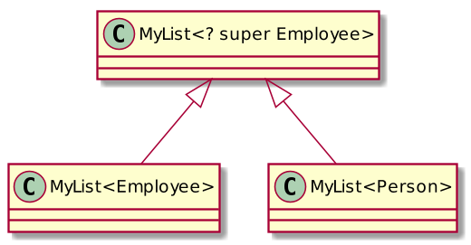
class MyList<E> implements Iterable<E> {
//MyList<Person> will do as MyList<Employee>!!
void addAllTo (MyList<? super E> list) {
for (E item: this) list.add(item);
}
}? super?List<? super E> list = ...
E e1 = ...;
//will compile!
list.add(e1);
list.add(null);
//Just Object. WHY??
Object e2 = list.get(...);List<?> — is the same as List<? extends Object>. (Question: why not <? super Object>?)
We can read elements, but only as Object.
We can put only `null`s.
PECS
Producer Extends, Consumer Super
public static <T> T max (Collection<? extends T> coll,
Comparator<? super T> comp)
Collections.max(List<Integer>, Comparator<Number>)
Collections.max(List<String>, Comparator<Object>)Used in method arguments and local variables.
Should not be returned. Their goal is to accept the arguments that need to be accepted and to reject the arguments that need to be rejected.
Must be used in the API, otherwise the API will be too "oburate" and unusable.
public static void swap(Pair<?> p) {
Object f = p.getFirst();
Object s = p.getSecond();
//Oops!
// (we know that they have the correct type,
// but there's nothing we can do)
p.setFirst(...);
p.setSecond(...);
}public static void swap(Pair<?> p) {
swapHelper(p);
}
private static <T> void swapHelper(Pair<T> p) {
T f = p.getFirst();
p.setFirst(p.getSecond());
p.setSecond(f);
}class Holder<E, SELF extends Holder<E, SELF>>{
E value;
SELF setValue(E value){
this.value = value;
return (SELF) this;
}
}
class StringHolder extends Holder<String, StringHolder> {
void doSmth() {...};
}
new StringHolder().setValue("aaa").doSmth();Useful
J. Bloch, Effective Java, 3rd ed. Chapter 5 — Generics. Addison-Wesley, 2018
Craziness
class Unsound {
static class Constrain<A, B extends A> {}
static class Bind<A> {
<B extends A>
A upcast(Constrain<A,B> constrain, B b) {
return b;
}
}
static <T,U> U coerce(T t) {
Constrain<U,? super T> constrain = null;
Bind<U> bind = new Bind<U>();
return bind.upcast(constrain, t);
}
public static void main(String[] args) {
String zero = Unsound.<Integer,String>coerce(0);
}
}class Sample {
interface BadList<T> extends List<List<? super BadList<? super T>>> {}
public static void main(String[] args) {
BadList<? super String> badList = null;
List<? super BadList<? super String>> list = badList;
}
}